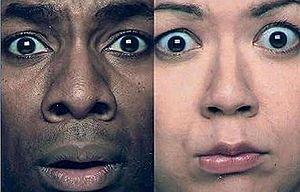
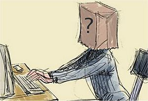
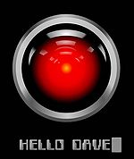

IP anónima
 De: La Frikipedia, la enciclopedia extremadamente seria.
De: La Frikipedia, la enciclopedia extremadamente seria.
| De la serie tribus urbanas del mundo:
|
| IP anónima
|
Ejemplo de la tribu
|
| Lo mas cercano al rostro de IP anónima
|
|
| Hábitat
|
Nadie lo sabe, aun
|
| Inteligencia
|
Se dice que su CI puede variar entre 0 y 1
|
| Frase favorita
|
(blanco) atte. IP anónima y también : Odio a los que no dan al cara.
|
| ¿Peligroso?
|
Mas que peligroso
|
| Obsesión
|
Estar en anonimato
|
| Notas
|
Suelen aparecer cuando menos se espera, y aprecian el anonimato
|
«No soy cobarde,soy un anonymous.»
~ IP anónima Y su tipica escusa para que no lo baneen.
IP anónima es una criatura no humana que suele pasearse entre las comunidades internáuticas, recopilando información (aun no se sabe con certeza la razón de este comportamiento) y manteniendo su anonimato. No se sabe mucho de esta criatura, pero se cree que fue descubierta el 29 de febrero del 1943 por Bill Gates, que mientras tenia una batalla a muerte con uno de sus pantallazos azules, una IP anónima recolectaba información...
Comportamiento
Fotografía de una de las veces que se estuvo a punto de capturar un IP anónima
Estos últimos años, la IP anónima ha empezado a reproducirse excesivamente, no se sabe cómo lo hace con certeza, pero se cree que para su reproducción requiere 6 especímenes, cada uno de diferente sexo.
Estudios han revelado que dentro de 2 horas podría llegar a ser la especie dominante del mundo, cosa que sería un problema, ya que ellos atascan nuestros foros y comunidades internáuticas con su anonimato.
IP anónima, últimamente se comporta como IP anónima
Tipos de sexo de IP anónima
Cada uno de los siguientes es un tipo de género de las IP anónimas, y cada uno de ellos es extremadamente necesario en su reproducción:
- Memory Card: es el que le da las instrucciones a los otros 5 sexos de como reproducirse (las IP anónimas son muy organizadas) y su signo es algo como ー (aun no se sabe que significa)
- Modelo: es el que da la iniciativa de reproducirse, se podría decir que es el que pone cachondos a los demas.
- La gata: es del que todos se aprovechan, es como IP anónima, su signo es Θ, y no diremos su significado.
- Gran barriga: usualmente, este género de la IP anónima, es el que carga a las nuevas IP anónimas durante 4 segundos, hasta que las transporta a una capsula para poder lavar sus cerebros y hacerlas olvidar todo, para así, hacerlos anónimas.
- Anonimo: este genero de IP anónima prefirió mantener el anonimato.
- Pene Drive: es el equivalente al macho en la especie humana y es casi tan larga como la de IP anónima.
- Usb 2.0: es el equivalente a la hembra en la espécie humana y IP anónima se harta de comer chochetes..
Diario de una IP anónima
 Los rostros de
IP anónima y Mónica despues de ver un IP anónima, quedaron perturbados.
Todo lo siguiente es real, son extractos de un diario encontrado en un ciber-cafe llamado "web@", localizado en Merida, Yucatan.
- 19 de febrero de 2015
- Querido diario, hoy encontre un sitio en interné llamado "La frikipedia", creo que empezaré a entrar a diario en él hasta conseguir la informacién que quiero.
- 30 de abril de 2015
- Querido diario, hoy encontre en la frikipedia a otros de mi especie, creo que me reproducire con ellos.
- 23 de septiembre de 2015
- Diario, hoy las otras IP anónimas empezaron a decir algo sobre gobernar interné, mañana veremos los planes con mas detenimiento.
- 3 de diciembre de 2015
- Hoy encontramos a el candidato perfecto para nuestra dominación de interné, su nombre es IP anónima, es como cualquier noob, deberia ser fácil dominar interné así.
- Hace una semana
- Querido diario, lamento no haberte escrito antes, pero es que las otras IP anónimas y yo estabamos llevando a cabo nuestro plan de dominación de la internet, ¡¡y todo salio como estaba planeado!!
- Puede que la internet aun no sea nuestra, pero la frikipedia ha sido dominada gracias al noob de IP anónima. Puede que aun ellos no lo sepan, pero todos los que llegan a siquiera entrar a este comunidad, nos estan dando su alma.
- 10 de septiembre de 2016
- Tengo que hacerte una confesión, diario. Ese al que llamas IP anónima en realidad es IP anónima. Que alivio, por fin se lo dije a alguien!
Personas que han sufrido ataques de un IP anónima
 Imagen de un IP anónima creada por
Dios, ni siquiera el ha visto su verdadero rostro
- Buda
- Gregory House (quedó cojo de por vida)
- Otro IP anónima
- Todas aquellas mujeres que encontraron ofensas en su MetroFlog y que intentaron vengarse
- Pocotú
- El que estuvo a punto de liberarnos de Ratzinger Z
- IP anónima
- José Canseco
- Feliciano Vargas
- Todo aquel cuyo apellido sea Anonimo
- El niño loco alemán
- El cani bizco
- IP anónima
Sabías que...
 Hal también odia a la IP anónima (Y quien no)
- ...va a matar a IP anónima?
- ...hace tiempo fuiste IP anónima, y ahora eres IP anónima?
- ...IP anónima es Hermafrodita?
- ...los IP anónima se auto satisfacen con sus dos organos sexuales?
- ...y los dos son coños?
- ...a IP anónima le gusta violar gente, la victima con más violaciones registradas es IP anónima
- ...IP anónima tiene una pelicula censurada pero la puedes ver en el canal de Studios Faerony?[1]
Poster de cine que va a ser utilizada en su estreno
Autor(es):
- Fordus
- ToxicCastle
- Alex el Mono
- Gore
- Veni Vidi Vici
- Mel-o
- Xeshan
- AguaBrillante
- Socram8888
- David Nano
Frikipedia 2005-2016, Licencia
GFDL 1.2 - Extraído por FrikiLeaks